图表
图表组件用于在屏幕上显示动态数据，支持多种类型的图表（如折线图、柱状图等），并允许用户自定义轴线和刻度设置。通过配置属性，可以调整网格线的数量、每个序列的数据点数以及更新模式等参数，以适应不同的应用场景
属性
| Property | Description |
|---|---|
| Div Row | 水平网格线数量 |
| Div Col | 垂直网格线数量 |
| Point Count | 每个序列的数据点数量 |
| Chart Type | 图表类型（折线图/柱状图） |
| Update Mode | 更新模式（移位/循环） |
| Zoom X | X轴缩放比例 |
| Zoom Y | Y轴缩放比例 |
| Chart Data | 图表数据系列 |
| Axis Tick | 轴线刻度设置 |
图表数据
| Property | Description |
|---|---|
| Chart Color | 数据系列颜色 |
| Chart Points | 数据系列点数 |
| Chart Axis | 数据系列关联的轴（左侧或右侧） |
轴线
| Property | Description |
|---|---|
| Axis Name | 轴线名称 |
| Min | 数值范围最小值 |
| Max | 数值范围最大值 |
| Major Len | 主刻度线长度 |
| Minor Len | 次刻度线长度 |
| Major Count | 主刻度线数量 |
| Minor Count | 次刻度线数量 |
| Tick En | 刻度线是否显示 |
| Label En | 刻度线标签是否显示 |
| Draw Size | 绘制刻度所需额外空间 |
| Text | 刻度线标签文本格式 |
图表类型
- 折线图：连接数据点的线条，可选择性地在数据点上显示标记
- 柱状图：以垂直柱形显示数据
更新模式
- 移位：新数据添加到右侧，旧数据向左移动
- 循环：数据以循环方式添加，如心电图显示
样式
| Style | Part | Description |
|---|---|---|
| Line Color | Main | 直线(网格线)颜色 |
| Line Width | Main | 直线(网格线)宽度 |
| Line Opacity | Main | 直线(网格线)透明度 |
| Line Dash Width | Main | 直线(网格线)虚线宽度 |
| Line Dash Gap | Main | 直线(网格线)虚线间距 |
| Line Color | Ticks | 刻度线颜色 |
| Line Width | Ticks | 刻度线宽度 |
| Line Opacity | Ticks | 刻度线透明度 |
| Line Width | Items | 折线图中的线条宽度 |
| Bg Opacity | Items | 折线图中的背景(堆积效果)透明度，当透明度不为0时，工具会自动生成事件回调来实现折线堆积效果 |
| Bg Grad Color | Items | 折线图中的背景(堆积效果)渐变颜色 |
| Bg Grad Dir | Items | 折线图中的背景(堆积效果)渐变方向 |
| Border Color | Indicator | 数据点边框颜色 |
| Border Width | Indicator | 数据点边框宽度 |
| Border Opacity | Indicator | 数据点边框透明度 |
| Border Side | Indicator | 数据点边框位置 |
| Size | Indicator | 数据点大小 |
使用
折线图
- 控件属性
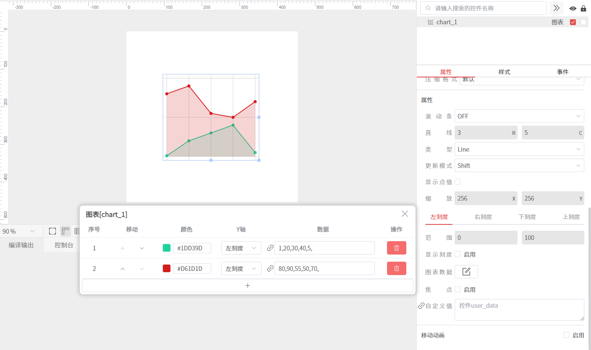
- 仿真
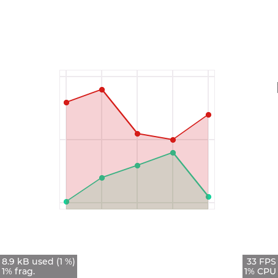
柱状图
- 控件属性
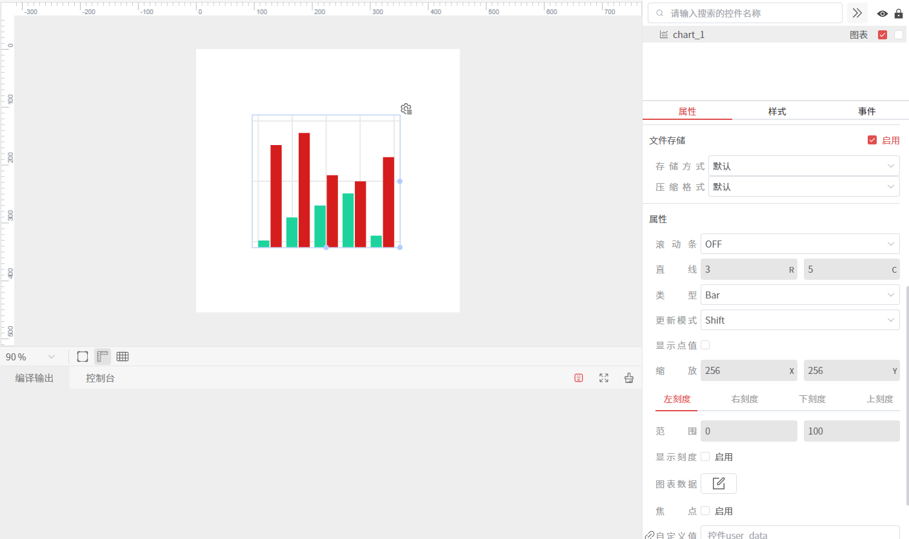
- 仿真
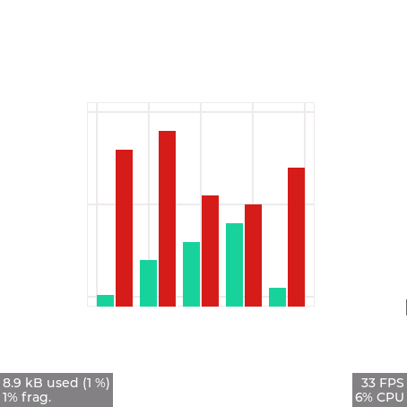
自定义折现图1
- 控件属性
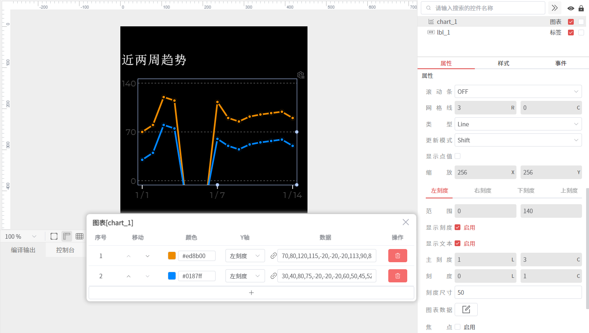
- 控件样式
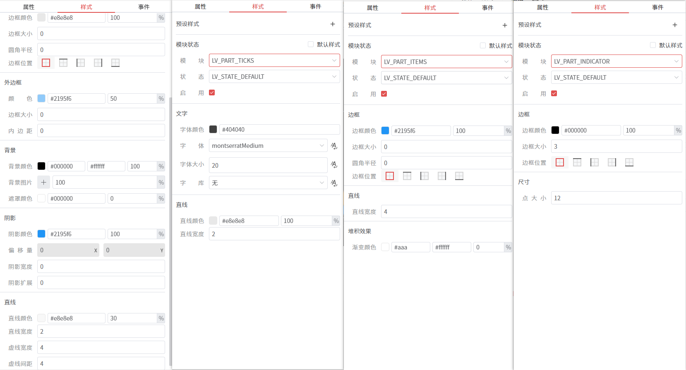
- 控件事件
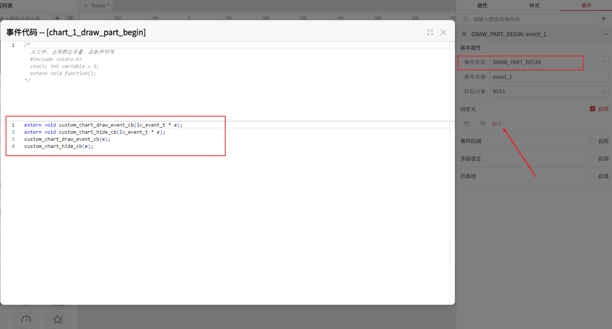
extern void custom_chart_draw_event_cb(lv_event_t * e);
extern void custom_chart_hide_cb(lv_event_t * e);
custom_chart_draw_event_cb(e);
custom_chart_hide_cb(e);
//在custom.c中实现
void custom_chart_draw_event_cb(lv_event_t * e)
{
lv_obj_t * obj = lv_event_get_target(e);
lv_chart_t * chart = (lv_chart_t *)obj;
lv_obj_draw_part_dsc_t * dsc = lv_event_get_draw_part_dsc(e);
// 只处理图表部分和线段绘制
if(dsc->part != LV_PART_ITEMS || !dsc->p1 || !dsc->p2) return;
// 确保不透明度不为0
// lv_opa_t bg_opa = lv_obj_get_style_bg_opa(obj, LV_PART_ITEMS | LV_STATE_DEFAULT);
// if(bg_opa == LV_OPA_TRANSP) return;
lv_opa_t bg_opa = 40; // 设置渐变背景的透明度
// 获取系列数据和点索引
lv_chart_series_t * ser = (lv_chart_series_t *)dsc->sub_part_ptr;
if(ser == NULL) return;
uint16_t curr_idx = dsc->id;
uint16_t next_idx = dsc->id + 1;
if (curr_idx < 0 || next_idx > chart->point_cnt - 1) return;
lv_coord_t curr_y = ser->y_points[curr_idx];
lv_coord_t next_y = ser->y_points[next_idx];
if (curr_y <= 0 || next_y <= 0) {
return; // 如果y值小于等于0，则不绘制渐变背景
}
//渐变背景绘制
lv_color_t grad_color = lv_obj_get_style_bg_grad_color(obj, LV_PART_ITEMS | LV_STATE_DEFAULT);
lv_grad_dir_t grad_dir = lv_obj_get_style_bg_grad_dir(obj, LV_PART_ITEMS | LV_STATE_DEFAULT);
if (grad_dir == LV_GRAD_DIR_NONE) {
lv_draw_mask_line_param_t line_mask_param;
lv_draw_mask_line_points_init(&line_mask_param, dsc->p1->x, dsc->p1->y, dsc->p2->x, dsc->p2->y, LV_DRAW_MASK_LINE_SIDE_BOTTOM);
int16_t line_mask_id = lv_draw_mask_add(&line_mask_param, NULL);
lv_draw_rect_dsc_t draw_rect_dsc;
lv_draw_rect_dsc_init(&draw_rect_dsc);
draw_rect_dsc.bg_color = dsc->line_dsc->color;
draw_rect_dsc.bg_opa = bg_opa;
lv_area_t a;
a.x1 = dsc->p1->x;
a.x2 = dsc->p2->x - 1;
a.y1 = LV_MIN(dsc->p1->y, dsc->p2->y);
a.y2 = obj->coords.y2;
lv_draw_rect(dsc->draw_ctx, &draw_rect_dsc, &a);
lv_draw_mask_free_param(&line_mask_param);
lv_draw_mask_remove_id(line_mask_id);
} else if (grad_dir == LV_GRAD_DIR_HOR) {
lv_coord_t pad_left = lv_obj_get_style_pad_left(obj, LV_PART_MAIN) + lv_obj_get_style_border_width(obj, LV_PART_MAIN);
lv_coord_t pad_right = lv_obj_get_style_pad_right(obj, LV_PART_MAIN) + lv_obj_get_style_border_width(obj, LV_PART_MAIN);
lv_coord_t x1_ofs = obj->coords.x1 + pad_left - lv_obj_get_scroll_left(obj);
lv_coord_t x2_ofs = obj->coords.x2 - pad_right - lv_obj_get_scroll_right(obj);
lv_draw_mask_line_param_t line_mask_param1;
lv_draw_mask_line_points_init(&line_mask_param1, dsc->p1->x, dsc->p1->y, dsc->p2->x, dsc->p2->y, LV_DRAW_MASK_LINE_SIDE_BOTTOM);
int16_t line_mask_id1 = lv_draw_mask_add(&line_mask_param1, NULL);
lv_draw_mask_line_param_t line_mask_param2;
lv_draw_mask_line_points_init(&line_mask_param2, dsc->p2->x, LV_MIN(dsc->p1->y, dsc->p2->y), dsc->p2->x, obj->coords.y2, LV_DRAW_MASK_LINE_SIDE_LEFT);
int16_t line_mask_id2 = lv_draw_mask_add(&line_mask_param2, NULL);
lv_draw_mask_line_param_t line_mask_param3;
lv_draw_mask_line_points_init(&line_mask_param3, dsc->p1->x, LV_MIN(dsc->p1->y, dsc->p2->y), dsc->p1->x, obj->coords.y2, LV_DRAW_MASK_LINE_SIDE_RIGHT);
int16_t line_mask_id3 = lv_draw_mask_add(&line_mask_param3, NULL);
// 当图表的数据超过两条时，这里渲染的颜色会有问题，所有数据的颜色都变成了第一条数据的颜色
lv_draw_rect_dsc_t draw_rect_dsc;
lv_draw_rect_dsc_init(&draw_rect_dsc);
draw_rect_dsc.bg_opa = bg_opa;
draw_rect_dsc.bg_grad.stops[0].color = dsc->line_dsc->color;
draw_rect_dsc.bg_grad.stops[1].color = grad_color;
draw_rect_dsc.bg_grad.stops[0].frac = 0;
draw_rect_dsc.bg_grad.stops[1].frac = 255;
draw_rect_dsc.bg_grad.dir = LV_GRAD_DIR_HOR;
lv_area_t a;
a.x1 = x1_ofs;
a.x2 = x2_ofs + 1;
a.y1 = LV_MIN(dsc->p1->y, dsc->p2->y);
a.y2 = obj->coords.y2;
lv_draw_rect(dsc->draw_ctx, &draw_rect_dsc, &a);
lv_draw_mask_free_param(&line_mask_param1);
lv_draw_mask_free_param(&line_mask_param2);
lv_draw_mask_free_param(&line_mask_param3);
lv_draw_mask_remove_id(line_mask_id1);
lv_draw_mask_remove_id(line_mask_id2);
lv_draw_mask_remove_id(line_mask_id3);
} else if (grad_dir == LV_GRAD_DIR_VER) {
lv_coord_t pad_top = lv_obj_get_style_pad_top(obj, LV_PART_MAIN) + lv_obj_get_style_border_width(obj, LV_PART_MAIN);
lv_coord_t pad_bottom = lv_obj_get_style_pad_bottom(obj, LV_PART_MAIN) + lv_obj_get_style_border_width(obj, LV_PART_MAIN);
lv_coord_t y1_ofs = obj->coords.y1 + pad_top - lv_obj_get_scroll_top(obj);
lv_coord_t y2_ofs = obj->coords.y2 - pad_bottom - lv_obj_get_scroll_bottom(obj);
lv_chart_series_t * ser = (lv_chart_series_t *)dsc->sub_part_ptr;
lv_chart_t * chart = (lv_chart_t *)obj;
uint16_t point_cnt = chart->point_cnt;
lv_coord_t max_point = 0;
lv_coord_t max_point_y = 0;
for (uint16_t i = 0; i < point_cnt; i++) {
if (ser->y_points[i] == LV_CHART_POINT_NONE) continue;
max_point = LV_MAX(max_point, ser->y_points[i]);
}
if (ser->y_axis_sec == 0) {
max_point_y = y2_ofs - (max_point - chart->ymin[0]) * (y2_ofs - y1_ofs) / (chart->ymax[0] - chart->ymin[0]);
} else {
max_point_y = y2_ofs - (max_point - chart->ymin[1]) * (y2_ofs - y1_ofs) / (chart->ymax[1] - chart->ymin[1]);
}
lv_draw_mask_line_param_t line_mask_param;
lv_draw_mask_line_points_init(&line_mask_param, dsc->p1->x, dsc->p1->y, dsc->p2->x, dsc->p2->y, LV_DRAW_MASK_LINE_SIDE_BOTTOM);
int16_t line_mask_id = lv_draw_mask_add(&line_mask_param, NULL);
lv_draw_rect_dsc_t draw_rect_dsc;
lv_draw_rect_dsc_init(&draw_rect_dsc);
draw_rect_dsc.bg_opa = bg_opa;
draw_rect_dsc.bg_grad.stops[0].color = dsc->line_dsc->color;
draw_rect_dsc.bg_grad.stops[1].color = grad_color;
draw_rect_dsc.bg_grad.stops[0].frac = 0;
draw_rect_dsc.bg_grad.stops[1].frac = 255;
draw_rect_dsc.bg_grad.dir = LV_GRAD_DIR_VER;
lv_area_t a;
a.x1 = dsc->p1->x;
a.x2 = dsc->p2->x - 1;
a.y1 = max_point_y;
a.y2 = obj->coords.y2;
lv_draw_rect(dsc->draw_ctx, &draw_rect_dsc, &a);
lv_draw_mask_free_param(&line_mask_param);
lv_draw_mask_remove_id(line_mask_id);
}
}
void custom_chart_hide_cb(lv_event_t * e)
{
lv_obj_t * obj = lv_event_get_target(e);
lv_chart_t * chart = (lv_chart_t *)obj;
lv_obj_draw_part_dsc_t * dsc = (lv_obj_draw_part_dsc_t *)lv_event_get_draw_part_dsc(e);
lv_chart_series_t * ser = (lv_chart_series_t *)dsc->sub_part_ptr;
if(ser == NULL) return;
if(dsc->part == LV_PART_ITEMS) {
if(dsc->p1 && dsc->p2 && dsc->line_dsc) {
uint16_t curr_idx = dsc->id;
uint16_t next_idx = dsc->id + 1;
if (curr_idx >= 0 && next_idx < chart->point_cnt) {
lv_coord_t curr_y = ser->y_points[curr_idx];
lv_coord_t next_y = ser->y_points[next_idx];
//如果两点有y值小于等于0，则不绘制折线
if (curr_y <= 0 || next_y <= 0) {
dsc->line_dsc->opa = LV_OPA_TRANSP;
} else {
dsc->line_dsc->opa = LV_OPA_COVER;
}
}
if (dsc->rect_dsc) {
dsc->rect_dsc->bg_color = dsc->line_dsc->color;
dsc->rect_dsc->border_color = lv_color_make(0x00, 0x00, 0x00);
}
} else if(!dsc->p1 && !dsc->p2) {
// 修改折现的最后一点的样式
if (dsc->rect_dsc) {
dsc->rect_dsc->border_color = dsc->rect_dsc->bg_color;
dsc->rect_dsc->bg_color = lv_color_make(0x00, 0x00, 0x00);
}
}
}
}
- 仿真
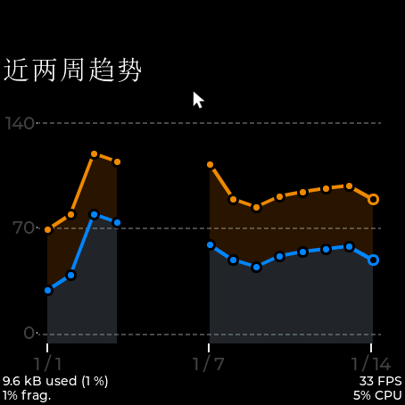
自定义折线图2
- 控件属性
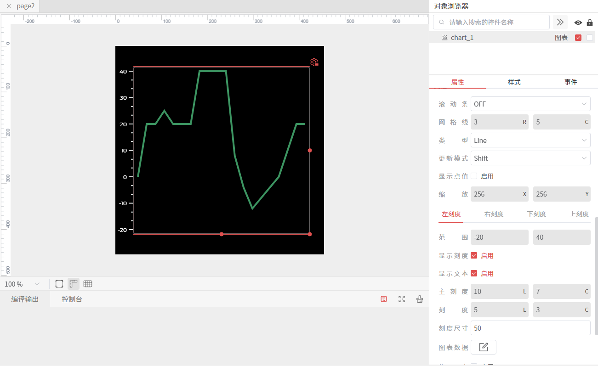
- 控件样式
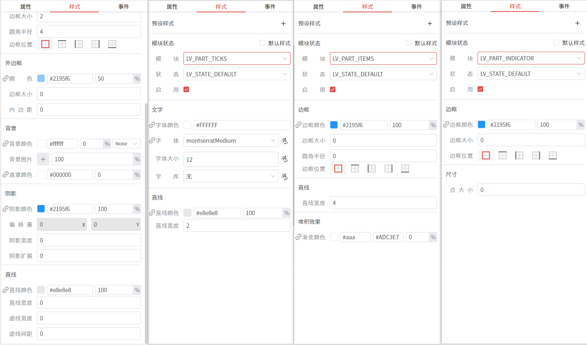
- custom.c
/* 将图表数值映射为当前对象坐标系中的 y 坐标 */
static lv_coord_t chart_value_to_y(lv_chart_t * chart, lv_chart_series_t * ser, lv_coord_t y1_ofs, lv_coord_t y2_ofs, lv_coord_t value)
{
lv_coord_t axis_min = chart->ymin[ser->y_axis_sec];
lv_coord_t axis_max = chart->ymax[ser->y_axis_sec];
if(axis_max == axis_min) return y2_ofs;
return y2_ofs - (value - axis_min) * (y2_ofs - y1_ofs) / (axis_max - axis_min);
}
/* 按整条基准渐变采样某个 y 位置对应的颜色。
* 这样不同高度的局部区域，会拿到各自正确的起止色，而不是每段都从固定颜色重新开始。 */
static lv_color_t chart_sample_color_on_axis(lv_coord_t y, lv_coord_t y_start, lv_coord_t y_end,
lv_color_t color_start, lv_color_t color_end)
{
if(y_start == y_end) return color_end;
int32_t mix = ((int32_t)(y_end - y) * 255) / (y_end - y_start);
if(mix < 0) mix = 0;
if(mix > 255) mix = 255;
return lv_color_mix(color_start, color_end, (uint8_t)mix);
}
static void chart_draw_ver_fill_segment(lv_obj_draw_part_dsc_t * dsc, lv_point_t * p1, lv_point_t * p2,
lv_coord_t base_y, lv_coord_t pos_top_y, lv_coord_t neg_bottom_y,
lv_opa_t bg_opa, lv_color_t bg_color, lv_color_t bg_grad_color)
{
if(p1->x == p2->x) return;
/* 只处理“整段都在 0 轴上方 / 下方”的情况；
* 若线段跨过 0 轴，会在外层先切成两段再分别调用这里 */
lv_draw_mask_line_side_t side;
lv_area_t a;
lv_color_t color_top;
lv_color_t color_bottom;
if(p1->y <= base_y && p2->y <= base_y) {
side = LV_DRAW_MASK_LINE_SIDE_BOTTOM;
a.y1 = LV_MIN(p1->y, p2->y);
a.y2 = base_y;
color_top = chart_sample_color_on_axis(a.y1, pos_top_y, base_y, bg_color, bg_grad_color);
color_bottom = chart_sample_color_on_axis(a.y2, pos_top_y, base_y, bg_color, bg_grad_color);
} else if(p1->y >= base_y && p2->y >= base_y) {
side = LV_DRAW_MASK_LINE_SIDE_TOP;
a.y1 = base_y;
a.y2 = LV_MAX(p1->y, p2->y);
color_top = chart_sample_color_on_axis(a.y1, base_y, neg_bottom_y, bg_grad_color, bg_color);
color_bottom = chart_sample_color_on_axis(a.y2, base_y, neg_bottom_y, bg_grad_color, bg_color);
} else {
return;
}
a.x1 = LV_MIN(p1->x, p2->x);
a.x2 = LV_MAX(p1->x, p2->x) - 1;
if(a.x1 > a.x2 || a.y1 > a.y2) return;
lv_draw_mask_line_param_t line_mask_param;
lv_draw_mask_line_points_init(&line_mask_param, p1->x, p1->y, p2->x, p2->y, side);
int16_t line_mask_id = lv_draw_mask_add(&line_mask_param, NULL);
/* 这里真正画“折线到基准线之间”的渐变区域。
* 正值区：bg_color -> bg_grad_color
* 负值区：bg_grad_color -> bg_color
* 但颜色会先按整条轴做采样，再用于当前局部矩形。 */
lv_draw_rect_dsc_t draw_rect_dsc;
lv_draw_rect_dsc_init(&draw_rect_dsc);
draw_rect_dsc.bg_opa = bg_opa;
draw_rect_dsc.bg_color = color_top;
draw_rect_dsc.bg_grad.stops[0].color = color_top;
draw_rect_dsc.bg_grad.stops[1].color = color_bottom;
draw_rect_dsc.bg_grad.stops[0].frac = 0;
draw_rect_dsc.bg_grad.stops[1].frac = 255;
draw_rect_dsc.bg_grad.dir = LV_GRAD_DIR_VER;
lv_draw_rect(dsc->draw_ctx, &draw_rect_dsc, &a);
lv_draw_mask_free_param(&line_mask_param);
lv_draw_mask_remove_id(line_mask_id);
}
static void custom_chart_draw_event_cb(lv_event_t * e)
{
lv_obj_t * obj = lv_event_get_target(e);
lv_obj_draw_part_dsc_t * dsc = lv_event_get_draw_part_dsc(e);
/* 仅拦截 chart 的折线段绘制事件 */
if(dsc->part != LV_PART_ITEMS || !dsc->p1 || !dsc->p2) return;
lv_opa_t bg_opa = lv_obj_get_style_bg_opa(obj, LV_PART_ITEMS | LV_STATE_DEFAULT);
if(bg_opa == LV_OPA_TRANSP) return;
lv_color_t bg_color = lv_obj_get_style_bg_color(obj, LV_PART_ITEMS | LV_STATE_DEFAULT);
lv_color_t grad_color = lv_obj_get_style_bg_grad_color(obj, LV_PART_ITEMS | LV_STATE_DEFAULT);
lv_grad_dir_t grad_dir = lv_obj_get_style_bg_grad_dir(obj, LV_PART_ITEMS | LV_STATE_DEFAULT);
if(grad_dir == LV_GRAD_DIR_VER) {
/* 垂直渐变模式下，以 y=0 为填充基准线，而不是图表底边 */
lv_coord_t pad_top = lv_obj_get_style_pad_top(obj, LV_PART_MAIN) + lv_obj_get_style_border_width(obj, LV_PART_MAIN);
lv_coord_t pad_bottom = lv_obj_get_style_pad_bottom(obj, LV_PART_MAIN) + lv_obj_get_style_border_width(obj, LV_PART_MAIN);
lv_coord_t y1_ofs = obj->coords.y1 + pad_top - lv_obj_get_scroll_top(obj);
lv_coord_t y2_ofs = obj->coords.y2 - pad_bottom - lv_obj_get_scroll_bottom(obj);
lv_chart_series_t * ser = (lv_chart_series_t *)dsc->sub_part_ptr;
lv_chart_t * chart = (lv_chart_t *)obj;
lv_coord_t axis_min = chart->ymin[ser->y_axis_sec];
lv_coord_t axis_max = chart->ymax[ser->y_axis_sec];
if(axis_max == axis_min) return;
lv_coord_t pos_top_y = chart_value_to_y(chart, ser, y1_ofs, y2_ofs, axis_max);
lv_coord_t neg_bottom_y = chart_value_to_y(chart, ser, y1_ofs, y2_ofs, axis_min);
lv_coord_t base_value = 0;
if(base_value < axis_min) base_value = axis_min;
if(base_value > axis_max) base_value = axis_max;
lv_coord_t base_y = chart_value_to_y(chart, ser, y1_ofs, y2_ofs, base_value);
lv_point_t p1 = *dsc->p1;
lv_point_t p2 = *dsc->p2;
if((p1.y <= base_y && p2.y <= base_y) || (p1.y >= base_y && p2.y >= base_y)) {
chart_draw_ver_fill_segment(dsc, &p1, &p2, base_y, pos_top_y, neg_bottom_y, bg_opa, bg_color, grad_color);
} else {
/* 跨过 0 轴时，先求交点，再拆成上下两段分别填充 */
lv_point_t cross;
cross.y = base_y;
cross.x = p1.x + ((int32_t)(base_y - p1.y) * (p2.x - p1.x)) / (p2.y - p1.y);
chart_draw_ver_fill_segment(dsc, &p1, &cross, base_y, pos_top_y, neg_bottom_y, bg_opa, bg_color, grad_color);
chart_draw_ver_fill_segment(dsc, &cross, &p2, base_y, pos_top_y, neg_bottom_y, bg_opa, bg_color, grad_color);
}
}
}
void custom_init(lv_ui *ui)
{
if(ui && ui->page2 && ui->page2->page2_chart_1 && lv_obj_is_valid(ui->page2->page2_chart_1)) {
lv_obj_remove_event_cb(ui->page2->page2_chart_1, custom_chart_draw_event_cb);
lv_obj_add_event_cb(ui->page2->page2_chart_1, custom_chart_draw_event_cb, LV_EVENT_DRAW_PART_BEGIN, NULL);
lv_obj_set_style_bg_opa(ui->page2->page2_chart_1, LV_OPA_100, LV_PART_ITEMS);
lv_obj_set_style_bg_color(ui->page2->page2_chart_1, lv_color_make(0x3c, 0x94, 0x61), LV_PART_ITEMS);
lv_obj_set_style_bg_grad_color(ui->page2->page2_chart_1, lv_color_make(0xff, 0x00, 0xff), LV_PART_ITEMS);
lv_obj_set_style_bg_grad_dir(ui->page2->page2_chart_1, LV_GRAD_DIR_VER, LV_PART_ITEMS);
}
}
- 仿真
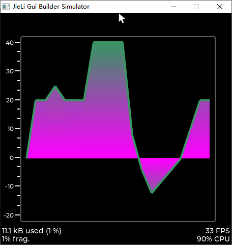